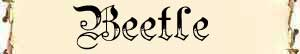

Il Massiccio dell'Ovest può considerarsi una zona per personaggi di 6°-8° livello.
DETERMINARE SE SI VERIFICA L'INCONTRO (1D10)
Si effettui un tiro per il giorno ed uno per la notte. Qualora si verifichi un incontro od un minore si tiri nuovamente per determinare se nel medesimo arco della giornata siano effettuati ulteriori incontri, il tiro sarà ripetuto fino a che non si verifichi un risultato di "nessun incontro". Si determini, quindi, l'orario in cui i vari incontri si sono verificati.
|
RISULTATO |
GIORNO ORE 6 - 17 (1D12+5) |
NOTTE ORE 18 - 5 (1D12) |
| 1 | INCONTRO MAGGIORE | INCONTRO MAGGIORE |
| 2 | INCONTRO MAGGIORE | INCONTRO MINORE |
| 3 | INCONTRO MINORE | NESSUN INCONTRO |
| 4+ | NESSUN INCONTRO | NESSUN INCONTRO |
TAVOLA DEGLI INCONTRI MAGGIORI
| RISULTATO | INCONTRO MAGGIORE DURANTE IL GIORNO | INCONTRO MAGGIORE DURANTE LA NOTTE |
| 2 | INCONTRO SPECIALE | INCONTRO SPECIALE |
| 3 | 1d12: (1-7) CREST GIANT (1) (8-12) ETTIN | 1d12: (1-7) CREST GIANT (1) (8-12) ETTIN |
| 4 | 1d12: (1-8) PIANTIFORMI (9-12) SNOW OOZE | 1d12: (1-8) PIANTIFORMI (9-12) SNOW OOZE |
| 5 | CYCLOPIAN (2d3) | CYCLOPIAN (2d3) |
| 6 | 1d10: (1-6) FROG (7-10) DISSOLUTORE | FROG |
| 7 | BUGBEAR OGRE | BUGBEAR OGRE |
| 8 | HOBGOBLIN | HOBGOBLIN |
| 9 | INCONTRO VOLANTE | INCONTRO VOLANTE |
| 10 | INCONTRO ANIMALE | INCONTRO ANIMALE |
| 11 | INCONTRO ANIMALE | INCONTRO ANIMALE |
| 12 | INCONTRO ANIMALE | INCONTRO ANIMALE |
| 13 | TREN | TREN |
| 14 | GOATFOLK (2d3) | GOATFOLK (2d3) |
| 15 | 1d10: (1-5) CENTIPEDE (6-10) SPIDER | 1d12: (1-4) BEETLE, (5-8) CENTIPEDE (9-12) SPIDER |
| 16 | PERSONAGGI NON GIOCANTI | PERSONAGGI NON GIOCANTI |
| 17 | FOMORIAN | FOMORIAN |
| 18 | 1d10: (1-6) CHIMERA (6-10) PANTERE DISTORCENTI | 1d10: (1-6) CHIMERA (7-10) PANTERE DISTORCENTI |
| 19 | RAGE DRAKE (1) | RAGE DRAKE (1) |
| 20 | INCONTRO SPECIALE | INCONTRO SPECIALE |
TAVOLA DEGLI INCONTRI MINORI
| RISULTATO | INCONTRO MAGGIORE DURANTE IL GIORNO | INCONTRO MAGGIORE DURANTE LA NOTTE |
| 1 | CADAVERE o CARCASSA * | CADAVERE o CARCASSA * |
| 2 | STAGNO NATURALE* | STAGNO NATURALE* |
| 3 | INSIDIA NATURALE o TRAPPOLA* | INSIDIA NATURALE o TRAPPOLA* |
| 4 | PICCOLO RUSCELLO* | PICCOLO RUSCELLO* |
| 5 | POZZA D'ACQUA (1d10: 1-8 Potabile 9-10 Venefica)* | POZZA D'ACQUA (1d10: 1-8 Potabile 9-10 Venefica)* |
| 6 | AMBIENTE PARTICOLARE* | AMBIENTE PARTICOLARE* |
| 7 | INCONTRO ANIMALE | INCONTRO ANIMALE |
| 8 | INCONTRO ANIMALE | INCONTRO ANIMALE |
| 9 | INCONTRO ANIMALE | INCONTRO ANIMALE |
| 10 | INCONTRO ANIMALE | INCONTRO ANIMALE |
| 11 | INCONTRO ANIMALE | INCONTRO ANIMALE |
| 12 | INCONTRO ANIMALE | INCONTRO ANIMALE |
*
Se il gruppo non è in movimento considerare tutti i risultati marcati con
l'asterisco come
INCONTRO ANIMALE
CADAVERE o CARCASSA
Verificare l'appartenenza tirando nella
Tavola degli Incontri Maggiori. La carcassa emana un odore pungente di cadavere
che i personaggi possono avvertire da discreta distanza 3d10*10 metri. La presenza della carcassa può attirare
animali o bestie feroci, quando i personaggi si avvicinano alla carcassa tirare
nuovamente 1d10 con risultato di 1-2 qualcuno sarà stato attirato dalla
carcassa, tirare quindi nella Tavola degli Incontri Maggiori (ripetere il tiro
se il risultato non considerabile una bestia attirata dalla carcassa). Se i
personaggi restano nei pressi della carcassa oltre ai normali tiri per gli
incontri ripetere il tiro suddetto una volta per il giorno ed una volta per la
notte. Si tiri 1d20 con un risultato da 1 a 12 la carcassa non è stata ripulita
dagli oggetti eventualmente trasportati.
INSIDIA NATURALE o TRAPPOLA (tirare 1d12)
Il gruppo incontra un'insidia naturale od una trappola. Può trattarsi di un pericolo dovuto alla natura selvaggia oppure di una trappola posizionata dalle creature della foresta o da cacciatori. Fra le insidie possibili nella foresta vi sono:
(1-3)
PERCORSO
SCOSCESO FRANOSO
Mentre i personaggi camminano nella foresta
iniziano a percorrere un percorso scosceso. Durante la discesa/salita parte del
terreno cede. Ogni personaggio e/o creatura deve tirare 1d6 con 1-3 sarà stato
coinvolto dalla frana e dovrà effettuare un tiro salvezza contro paralisi
(modificato dalla destrezza) per evitare di cadere per 3d6 metri a valle
provocandosi 1 punto danno per metro di caduta.
(4-6)
FOSSA NASCOSTA
Mentre i personaggi camminano nella foresta
calpestano una zona di terreno che in realtà nasconde una fossa nascosta
naturale coperta. Ogni personaggio e/o creatura deve tirare 1d6 con 1-3 sarà
coinvolto dalla fossa e dovrà effettuare un tiro salvezza contro paralisi
(modificato dalla destrezza) per evitare di caderci dentro. I personaggi che
possiedono la competenza observation possono provare ad
utilizzarla, qualora superano la prova riceveranno un bonus di +3 (+15%) al tiro
salvezza. I personaggi caduti subiranno danni a seconda della profondità del
fosso. Per determinare la tipologia del fosso effettuare i seguenti tiri:
2d10+2 metri di profondità (1d6 danno da botta ogni 3 metri)
1-2 su 1d10: Presenza di rocce taglienti alla fine del fosso (+1d8 danni da
taglio)
1-4 su 1d10: Presenza di fogliame morbido sul fondo (i danni da botta sono
provocati ogni 4 metri di caduta)
1-3 su 1d10: Presenza di rovi spinosi sul
fondo (+1d2 danni da taglio, inoltre il personaggio risulta invischiato nei
rovi. Ogni round può provare a liberarsi con un'azione che dura un intero round
superando un tiro salvezza contro paralisi, per ogni tiro salvezza fallito
subisce ulteriori 1d2 danni da taglio).
(7-8)
VESPAIO OD ALVEARE
Mentre i personaggi camminano nella foresta
si imbattono in un alveare (o vespaio) di insetti molto aggressivi. Uno dei
personaggi selezionato a caso sarà a contatto con l'alveare. Dall'alveare
fuoriuscirà uno sciame aggressivo. Per determinare la grandezza dello sciame
tirare 1d3, lo stesso potrà occupare da 1 a 3 sfere di 3 metri di diametro
(esagoni). Ogni sfera dello sciame può muoversi separatamente ed aggredire una
creatura muovendosi volando ad un fattore movimento pari a 18. Lo sciame non
subisce penalità per il territorio e aggredisce una creatura quando occupa la
medesima casella occupata dalla stessa. Ogni round di combattimento, appena lo
sciame raggiunge la vittima, la stessa subirà automaticamente 1d3+1 danni
(l'attacco non può provocare effetti critici e si considera effettuato al
fattore movimento dello sciame che si muove come se fosse una creatura di taglia
media) inoltre la stessa dovrà superare un tiro salvezza contro veleno o subire
i seguenti effetti: Veleno: Tipo
Insinuativo, Onset 1 round,
Effetto 0/Incapacitato per 24 ore, Delay
None, Mod. TS 0,
Ass. 24 ore.
Ogni sfera di sciame si considera avere 10 punti ferita e può essere danneggiata
solo attraverso attacchi ad area nella posizione occupata, lo sciame effettua
tiri salvezza come se fosse una creatura di 3 dadi vita. Effetti ad area non di
energia (si pensi a magie quali Tarsis Rain of Stone) provocheranno solo
1/3 dei danni (1/6 se il tiro salvezza riesce).
Lo sciame inseguirà le sue vittime fino a che le stesse si troveranno entro 21
metri dall'alveare e per 1d3 rounds successivi al loro allontanamento (per far
poi ritorno all'alveare). Lo sciame non inseguirà le vittime sotto la superficie
dell'acqua.
Ogni sfera di sciame eliminata potrà valutarsi 125 punti esperienza. Eliminato
lo sciame nell'alveare potranno rivenirsi 1d10 libbre di miele di alta qualità
dal valore di 15 corone l'una.
(9-10)
TAGLIOLA
Mentre i personaggi camminano nella foresta
uno di questi (sorteggiato a caso) rischia di finire in una tagliola per
animali. Per evitarla dovranno superare un tiro salvezza contro pietrificazione. I personaggi che possiedono la competenza observation possono
provare ad utilizzarla, qualora superano la prova nella competenza costoro
riceveranno un bonus di +3 (+15%) al tiro salvezza. Se il tiro salvezza fallisce
il personaggio sarà colpito dalla tagliola che provocherà 1d3 danni da taglio
(se il tiro salvezza è fallito criticamente il personaggio dovrà anche tirarsi
un critico da taglio ad una gamba). Vi è 1 possibilità su 10 che la tagliola sia
sporca od arrugginita, se ciò avviene il personaggio deve superare un tiro
salvezza contro malattia od ammalarsi di una delle malattie dei combattenti. Per
liberarsi dalla tagliola il personaggio deve aprirla superando una prova di
forza con penalità di -2. Per ogni tentativo subisce un punto fatica e se
fallisce si provoca 1 danno ulteriore da taglio. Al massimo una seconda creatura
può provare ad aiutare ad aprire la tagliola addizionando la sua forza a quella
del personaggio (sempre con penalità di -2). In questo caso si effettuerà un
solo tiro ma entrambi accumuleranno 1 punto fatica e se la prova fallisce il
bloccato dalla tagliola si provocherà 1 danno ulteriore da taglio. Una volta
aperta la tagliola resta pronta a scattare nuovamente. La tagliola ha un peso
pari a 10 libbre ed una catena con la quale si inchioda o aggancia alla
vegetazione o ad un altro supporto. Ogni volta che scatta vi è 1 possibilità su
20 che la tagliola si rompa definitivamente.
(11-12) CORDA
SOSPESA
Mentre i personaggi camminano nella foresta
uno degli stessi selezionato a caso finisce in una corda sospesa. Per evitare la
corda occorre effettuare un tiro salvezza contro pietrificazione. Se il tiro
salvezza riesce il personaggio evita la corda, altrimenti sarà intrappolato e
sollevato 1d2*3 metri. Per liberarsi il personaggio può provare a tagliare la
corda colpendo AC 6 ed effettuando con un unico colpo almeno 4 danni da taglio.
Il personaggio appeso ha una penalità al tiro per colpire di -3 (-1 se riesce in
una prova della competenza tumbling). La corda può essere slegata da terra da
eventuali compagni del personaggio. Tagliata la corda il personaggio cadrà
immediatamente al suolo. In 2d20 ore giungeranno sul posto coloro che hanno
posizionato la corda.
AMBIENTE PARTICOLARE (tirare 1d8)
1 AMMASSO
ROCCIOSO
2
VEGETAZIONE ESTREMAMENTE FITTA
3
VEGETAZIONE SPINOSA
4
PICCOLA CAVERNA NATURALE
5
GROSSA CAVERNA NATURALE
6
GRUPPO DI CAVERNE NATURALI
7 CAMPO
ABBANDONATO
8 CAPANNO DI CACCIA
TAVOLA DEGLI INCONTRI ANIMALI (1d10)
1-5 ANIMALE DI PICCOLA TAGLIA
| RISULTATO (1d100) | INCONTRO ANIMALI NELLA FORESTA |
| 1-8 | VOLPE ROSSA |
| 9-16 | PORCOSPINO |
| 17-24 | GATTO DELLE FORESTE |
| 25-32 | PROCIONE |
| 33-40 | TACCHINO |
| 41-48 | DONNOLA |
| 49-56 | TASSO |
| 57-66 | ANATRA DELLE FORESTE |
| 67-81 | LEPRE |
| 82-96 | UCCELLO DA PREDA |
| 97-100 | ERMELLINO |
6-8 ANIMALE DI GROSSA TAGLIA
| RISULTATO (1d100) | INCONTRO ANIMALI NELLA FORESTA |
| 1-12 | GAUR |
| 13-25 | ALCE |
| 26-38 | CERVO |
| 39-44 | CAVALLO |
| 45-52 | CAT, GREAT |
| 53-64 | BEAR |
| 65-72 | GHIOTTONE |
| 73-88 | CINGHIALE |
| 89-100 | LUPO |
9-10 SERPENTE
TAVOLA DEGLI INCONTRI VOLANTI
| RISULTATO | INCONTRO VOLANTE DURANTE IL GIORNO | INCONTRO VOLANTE DURANTE LA NOTTE |
| 2 | ||
| 3 | WYVERN (1) | |
| 4 | ||
| 5 | DRAKE, FLAME (1) | |
| 6 | DRAKE, ANCIENT (1) | |
| 7 | ||
| 8 | ROC (MC 1-2) | |
| 9 | PERYTON (MC1-2) | |
| 10 | KARAK (2d3) | |
| 11 | ||
| 12 |
TAVOLA DEGLI INCONTRI SPECIALI
| RISULTATO | INCONTRO SPECIALE |
| 2 | VERY RARE |
| 3 | VERY RARE |
| 4 | GIANT, CLOUD |
| 5 | VERY RARE |
| 6 | BULETTE (1) |
| 7 | DRAGON - MOUNTAIN (1) |
| 8 | RARE |
| 9 | RARE |
| 10 | RARE |
| 11 | RARE |
| 12 | RARE |
| 13 | RARE |
| 14 | RARE |
| 15 | RARE |
| 16 | BULETTE |
| 17 | VERY RARE |
| 18 | GIANT, CYCLOPS |
| 19 | VERY RARE |
| 20 | VERY RARE |
TAVOLA DEI PERSONAGGI NON GIOCANTI (2d6)
| RISULTATO | INCONTRO DI PERSONAGGI NON GIOCANTI |
| 2 | |
| 3 | |
| 4 | |
| 5 | |
| 6 | |
| 7 | |
| 8 | |
| 9 | |
| 10 | |
| 11 | |
| 12 |
DETERMINARE LA DISTANZA DELL'INCONTRO (1D6)
1 Incontro
Molto Ravvicinato ( 1d3+1 * 3 metri )
2 Incontro Ravvicinato ( 1d3 *
9 metri )
3 Incontro a Corta Distanza (
1d3+1 * 9 metri )
4 Incontro a Media Distanza (
2d3 * 9 metri )
5 Incontro a Lunga Distanza ( 2d3+2 *
9 metri )
6 Incontro Lontano ( 3d3+3 *
9 metri )
Se il gruppo è in movimento e incontra creature che potenzialmente possono accamparsi occorre tirare 1d20 con un risultato da 1 a 5 le creature incontrate sono accampate.
DETERMINARE LE MODALITA' DI AVVISTAMENTO (1D12)
1 Il gruppo si
trova in un’imboscata organizzata*
2 Il gruppo viene avvistato per primo
3 Il gruppo viene avvistato per primo
4 Il gruppo viene avvistato
per primo
5 Entrambi i gruppi si avvistano contemporaneamente
6 Entrambi i gruppi si avvistano contemporaneamente
7 Entrambi i gruppi si avvistano contemporaneamente
8 Entrambi i gruppi si
avvistano contemporaneamente
9 Entrambi i gruppi si avvistano contemporaneamente
10 Il gruppo avvista per primo l’incontro
11 Il gruppo avvista per primo l’incontro
12 Il gruppo avvista per primo l’incontro
* Qualora le creature si ritiene non opportuno che le creature incontrate siano in grado di effettuare un'imboscata si rinnovi il tiro di dado. Si noti inoltre che l'imboscata si verifica solo con un tiro di 1 naturale, se il risultato diviene 1 dopo l'applicazione dei modificatori si applichi il risultato previsto al numero 2. In caso di imboscata aggiungere un bonus del 20 % ai punti esperienza previsti dall'incontro.
Modificatori:
A seconda della strategia utilizzata dal gruppo è possibile applicare un
modificatore di + o - 1.
Qualora l'incontro sia composto da almeno 5 creature applicare un modificatore
di +1 al tiro.
Qualora il gruppo sia composto da
almeno 5 personaggi (ivi comprese le cavalcature) applicare un modificatore di
-1 al tiro.
La presenza di creature Huge in uno dei due gruppo implica un modificatore di +
o - 1 a favore dell'altro gruppo.
La presenza di creature Gargantuan in
uno dei due gruppo implica un modificatore di + o - 2 a favore dell'altro
gruppo.
Trovarsi accampati implica un modificatore di + o - 1 a favore dell'altro
gruppo.
Applicare i modificatori previsti a seconda del tipo di creatura incontrata e
della sua strategia di attacco/movimento.
BEETLE
Si tiri 1d20 per determinare il tipo di scarafaggio
gigante incontrato.
1-10
BEETLE, Boring; 11-20
BEETLE, Fire;

BEETLE, Boring (Numero: 1d6)
Boring beetles feed on rotting wood and similar organic material, so they are usually found individually inside huge trees or massed in underground tunnel complexes. Combat: The large mandibles of the boring beetle have a powerful bite and will inflict up to 20 points on damage to the victim. Habitat/Society: Individually, these creatures are not much more intelligent than other giant beetles, but it is rumored that nests of them can develop a communal intelligence with a level of consciousness and reasoning that approximates the human brain. This does not mean that each beetle has the intelligence of a human, but rather that, collectively, the entire nest has attained that level. In these cases, the beetles are likely to collect treasure and magical items from their victims. Ecology: In tunnel complexes, boring beetles grow molds, slimes, and fungi for food, beginning their cultures on various forms of decaying vegetable and animal matter and wastes. One frequent fungi grown is the shrieker, which serves a dual role. Not only is the shrieker a tasty treat for the boring beetle, but it also functions as an alarm when visitors have entered the fungi farm. Boring beetles are quick to react to these alarms, dispatching the invaders, sometimes eating them, but in any case gaining fresh organic matter on which to raise shrieker and other saprophytic plants.
BEETLE, Fire (Numero: 3d3+1)
The smallest of the giant beetles, fire beetles are nevertheless capable of delivering serious damage with their powerful mandibles. They are found both above and below ground, and are primarily nocturnal. Combat: Despite its name, the fire beetle has no fire attacks, relying instead on its huge mandibles to inflict up to three times the damage of a dagger in a single attack. Ecology: Fire beetles have two special glands above their eyes and one near the back of their abdomens. These glands produce a luminous red glow, and for this reason they are highly prized by miners and adventurers. This luminosity persists for ld6 days after the glands are removed from the beetle, and the light shed will illuminate a radius of 10 feet. The light from these glands is "cold" -- it produces no heat. Many mages and alchemists are eager to discover the secret of this cold light, which could be not only safe, but economical, with no parts to heat up and burn out. In theory, they say, such a light source could last forever.
CAT,
GREAT
Leone di Montagna
(Numero: 1)
Per determinare il tipo di Leone di Montagna incontrato
sul Massiccio dell'Ovest tirare 1d20:
1-5 Leone dalla Cresta Bianca (cresta
bianca e tinta del pelo grigio). E' particolarmente feroce: Morale sempre 10, +1
Thac0 e Danni (+30 xp).
6-20 Puma dei Monti
(manto marrone scuro).
Diet: Carnivoro
Intelligence: Semi-Int. (2 - 4)
Alignment: Neutral
Armor Class: 6
Movement: 12
Hit Dice: 3+1
THAC0: 17
No. of Attacks: 1 morso + 2 artigli
Damage/Attack: 1d6 + 1d3*2
Special Attacks: Rear Claws: ogni volta che colpisce con entrambi
gli artigli attacca anche con i due artigli posteriori 1d4/1d4.
Special Defenses: Sorpreso solo con 1 naturale
Magic Resistance: Nil
Size: Medium - 1,75 m. lungo;
Morale: Average (8-10)
XP Value: 270
I leoni di montagna hanno sensi molto sviluppati ed ottengono un modificatore di -1 il tiro sulla modalità di avvistamento.
Si tiri 1d20 per determinare il tipo di centipede
incontrato:
1-4 Rock Centipede; 5-15
Stone Centipede; 16-20
Giant Centipede;
Rock Centipede
(Numero 1)
Si tratta di un insetto gigante, lungo circa 3 metri dal ventre
marrone e dal carapace del dorso grigiastro e dalla forma di rocciosa.
Questo insetto si muove molto lentamente essendo simile ad una roccia montana.
Sul suo carapace, inoltre, crescono piante comuni delle zone montane. Quando si
incontra uno di questi insetti tirare 1d10: con un risultato da 1 a 7, l'insetto
sarà mimetizzato (effettuare il tiro di mimetizzazione all'80%, se il tiro ha
successo l'insetto effettuerà un'imboscata ad un personaggio selezionato a caso
che si troverà nel suo raggio di mezzo movimento ed attacco); con un risultato
da 8 a 10, l'insetto sarà osservato in movimento alla comune distanza d'incontro
(stesso risultato avviene se l'insetto fallisce il tiro di mimetizzazione).
Diet: Carnivoro
Intelligence: None (0)
Alignment: Neutral
Armor Class: 3
Movement: 9
Hit Dice: 7+7
THAC0: 14
No. of Attacks: 1 morso
Damage/Attack: 2d6
Special Attacks: Nil
Special Defenses: Rigenerazione
Magic Resistance: Nil
Size: Large - 3 m. lungo;
Morale: Champion (15)
XP Value (comprensivo del bonus large): 800
I fluidi corporei del Rock Centipede consentono allo stesso una rigenerazione delle ferite pari ad 1 punto ferita perso alla fine di ogni round di combattimento.
Mystical Resource Sourge (Fluido Corporeo) Quantità: 2, Presenza 33% - Effetto Particolare: Rigenerazione - Qualità della Risorsa: Common.
Stone Centipede
(Numero 2d3)
Si tratta di un insetto gigante, lungo circa 1/2 metro dal ventre
bianco e dal carapace del dorso grigio chiaro o marrone.
Strisciano fra i sassi montani per cui si incontrano sempre a distanza molto
ravvicinata, inoltre sono molto difficili da avvistare ed ottengono un
modificatore di -2 al tiro sulla modalità di avvistamento.
Se il gruppo è in movimento tirare 1d10: da 1 a 3 uno dei personaggi finisce per
calpestare una tana di queste creature che appaiono sparse in tutte le caselle
adiacenti e lo attaccano immediatamente (iniziativa di mezzo movimento). Prova
di osservare a -3 per vedere la tana prima di andarci sopra: se la prova riesce
il personaggio può tirare la sorpresa con penalità di -1, se la prova fallisce
si considera come imboscata e solo al round successivo si tira la sorpresa
(senza modificatore).
Diet: Carnivoro
Intelligence: None (0)
Alignment: Neutral
Armor Class: 5
Movement: 9
Hit Dice: 2
THAC0: 19
No. of Attacks: 1 morso
Damage/Attack: 1d3
Special Attacks: Veleno
Special Defenses: Nil
Magic Resistance: Nil
Size: Small - 50 cm. lungo;
Morale: Elite (13)
XP Value: 50
Veleno: Tipo Insinuativo, Onset 1 round, Effetto 0 / 8, Delay 2 rounds, Tiro Salvezza +1, Assuefazione nessuna.
Giant Centipede
(Numero 1d2)
Si tratta di un insetto gigante, lungo circa 4 metri dal ventre
marrone e dal carapace a strisce gialle e nere. La testa è fornita di due grosse
ed appuntite mandibole.
Diet: Carnivoro
Intelligence: None (0)
Alignment: Neutral
Armor Class: 4
Movement: 15
Hit Dice: 5+3
THAC0: 16
No. of Attacks: 1 morso
Damage/Attack: 1d12
Special Attacks: Veleno
Special Defenses: Nil
Magic Resistance: Nil
Size: Large - 4 m. lungo;
Morale: Elite (14)
XP Value (comprensivo del bonus large): 450
Veleno: Tipo Insinuativo, Onset 1 round, Effetto Nessuno / Incapacitato 10 rounds, Tiro Salvezza -1, Assuefazione nessuna.
Si tiri 1d20 per determinare l'età (categoria) del drago
incontrato [LINK]
1 Hatchling 2-3 Very Young 4-8 Young 9-13 Juvenile 14-17 Young Adult 18-19 Adult
20 Mature Adult
Si tiri 1d20 per determinare il tipo di rana o rospo
incontrato:
1-13 Speartongue Frog
(1d3); 14-20 Spine Frog
(1). [LINK]
Si tiri 1d20 per determinare il tipo di piantiforme incontrato:
1-5 Vampire Root [LINK];
Si tiri 1d20 per determinare il tipo di ragno incontrato:
GIORNO)
1-5 Ragno Gigante dei Cunicoli
(1d6+2) [LINK]; 6-13
Tarantola Gigante delle Cave Rocciose
(1) [LINK];14-20
Aracnide dalle Spine Rosse
(1) [LINK].
NOTTE)
1-2 Ragno Gigante dei Cunicoli
(1d6+2) [LINK]; 4-8
Tarantola Gigante delle Cave Rocciose
(1) [LINK]; 9-16
Aracnide Assassino delle Ombre
(1) [LINK]; 17-20
Aracnide dalle Spine Rosse
(1) [LINK].